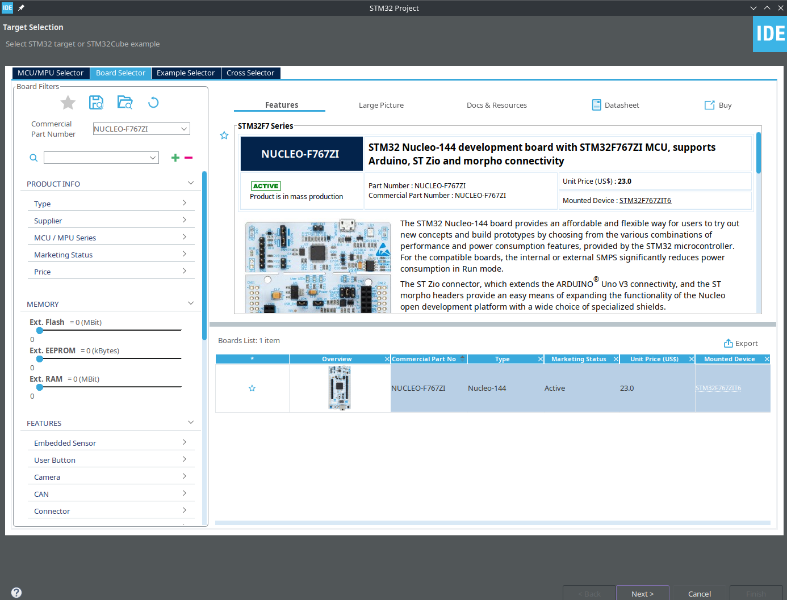
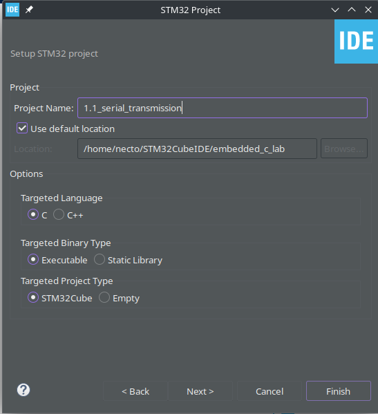
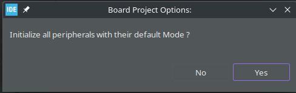

2 STMCubeIDE: Getting Started and How-Tos
This tutorial assumes that STMCubeIDE is already installed in the system. If not it can be downloaded and installed from here.
2.1 Terminology
- STMCubeIDE - An development environment containing many tools that are required in stm32 based project development.
- STMCubeMX - A Configuration and Initialization code generation tool used for configuration of different peripherals.
- .ioc file - A file generated by STMCubeMX, containing the configuration, when opened with STMCubeIDE will open an CubeMX window.
- Workspace - An workspace is a parent directory(or folder) which will contain a group of projects(seperate exercises).
- Project - A subfolder within a workspace containing all the source files, libraries and .ioc file for a particular program which can be uploaded at a time in the development board.
2.2 Recommended Conventions for the lab
- Use a new workspace named ‘embedded_c_lab’.
- Name the projects accordingly as
'{exercise_no}.{task_no}_{name of the exercise}'(Eg,1.2_serial_loopback) so that it will be displayed in the explorer in an ordered fashion.
2.3 Creating an STM32 Project
- Open STMCubeIDE and create a new STM32 project. Refer this for more info.
- From the Target Selection dialog box select the “Board Selector” tab and in the commercial part number, type “Nucleo-F767ZI”, select the board and click next.
- Go with the default settings and finish the setup. .
- Initalize peripherals in default mode(if needed you can start blank). 
2.4 Generating code with CubeMX
The CubeMX window can be opened by opening the {project_name}.ioc file inside the project folder. When the changes in the .ioc file is saved it will prompt you to generate code.
You can also generate code after configuration using Project->Generate Code from the menu bar.
After generating code using CubeMX you will find some directories in your project folder.
For this lab we will be only editing the /{project_name}/Core/Src/main.c, which has the main program that need to be executed.
2.5 Contents of main.c generated by CubeMX
In the main.c file you can find the code generated by CubeMX and different sections for user code identified by comments of the below format.
/* USER CODE BEGIN <section_name> */
/* USER CODE END <section_name> */These lines from main.c won’t be changed even if the configuration from the CubeMX are changed.
For this lab we will be writing codes in the below user slots.
| Section Name | Postion | Usecase |
|---|---|---|
| Includes PTD PD PM |
after default includes | For user includes, typedefs, defines, and macros respectively. |
| PV | before main function | For global variables. |
| PFP | before main function | For user-defined function prototypes. |
| 0 | before main function | For user-defined functions |
| 1 | inside main function before hal init | HAL functions cannot be used here. Can be used to initialize local variables used in the main function. |
| 2 | inside main function after hal init | HAL functions can be used here. Can be used for running HAL functions once during start. |
| WHILE | inside main inside while loop | The code for the main loop |
| 3 | inside main after the while loop | This can be used for programs that breaks the while loop after some time. |
| 4 | after the main function after basic configs | This can be used for callbacks and ISR. |
The Code Examples given for CubeMX generated code will have two views in this manual which can be toggled.
- Single View - This view will have the overall structure of the code with only the user code slots surrounded by the slot comments as described above and not the complete code.
- Parts View - This view will have the individual user sections as seperate code blocks, making it easier for copy pasting into the IDE.
2.6 Common problems during setup and solution
Cannot open workspace, workspace is currently in use
Kill the CubeIDE process and delete the.lock file in the .metadata directory in your eclipse workspace directory. Precaution - If you delete the .metadata folder all preference will be deleted.
arm-none-eabi-gdb –version /lib/libncurses.so.5 not found
- In ubuntu, install libncurses5 using
sudo apt-get install libncurses5. - In Arch or Manjaro, install compatibility libs using
pamac install ncurses5-compat-libs.